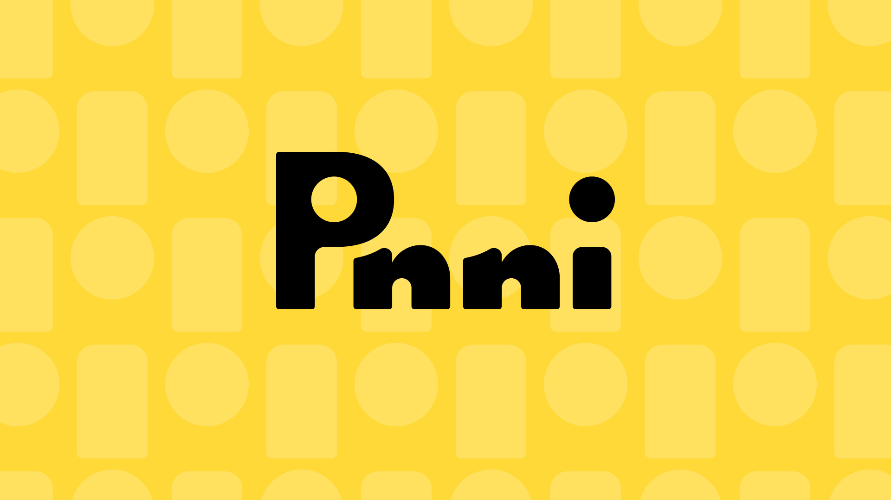
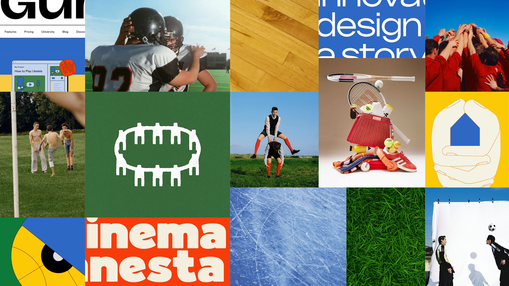
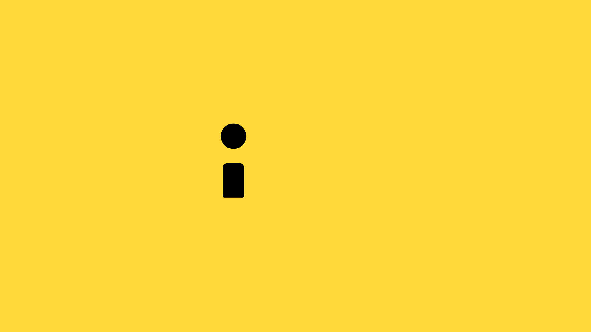
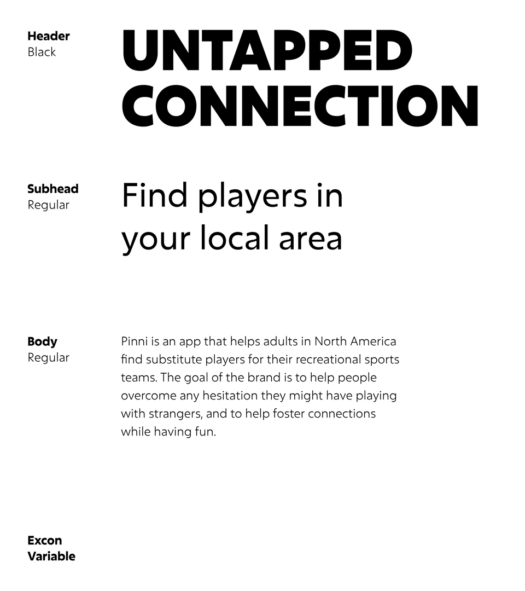
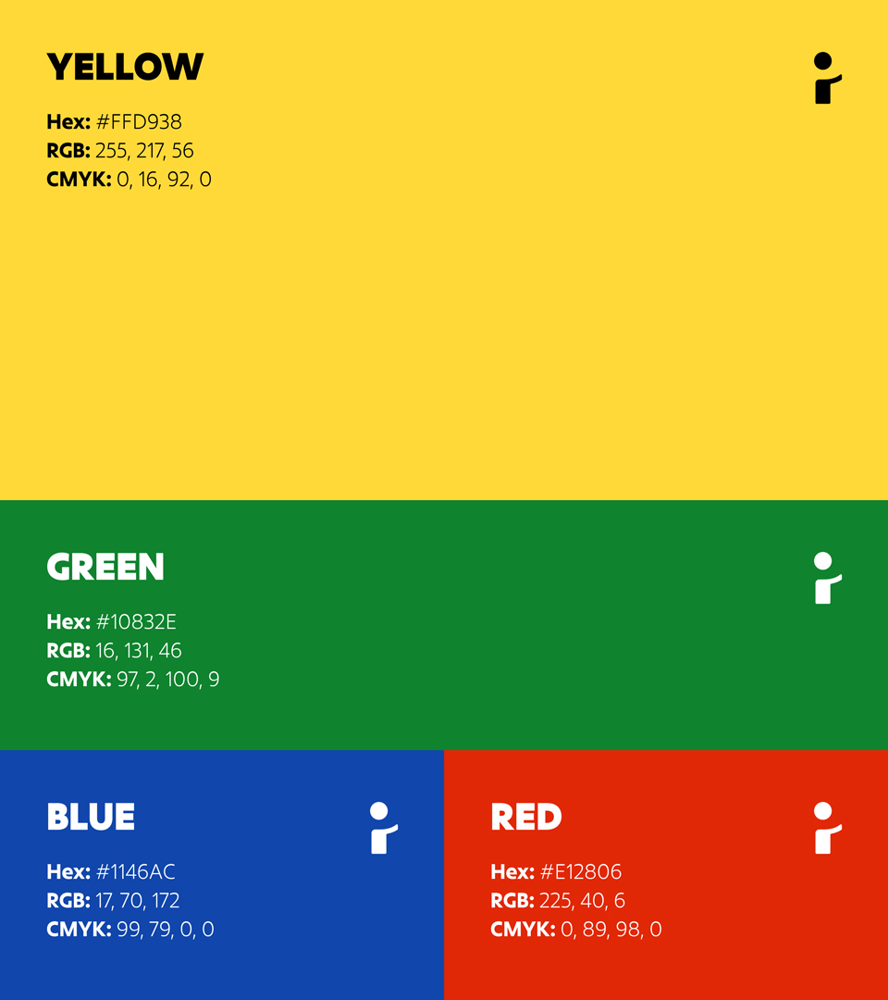
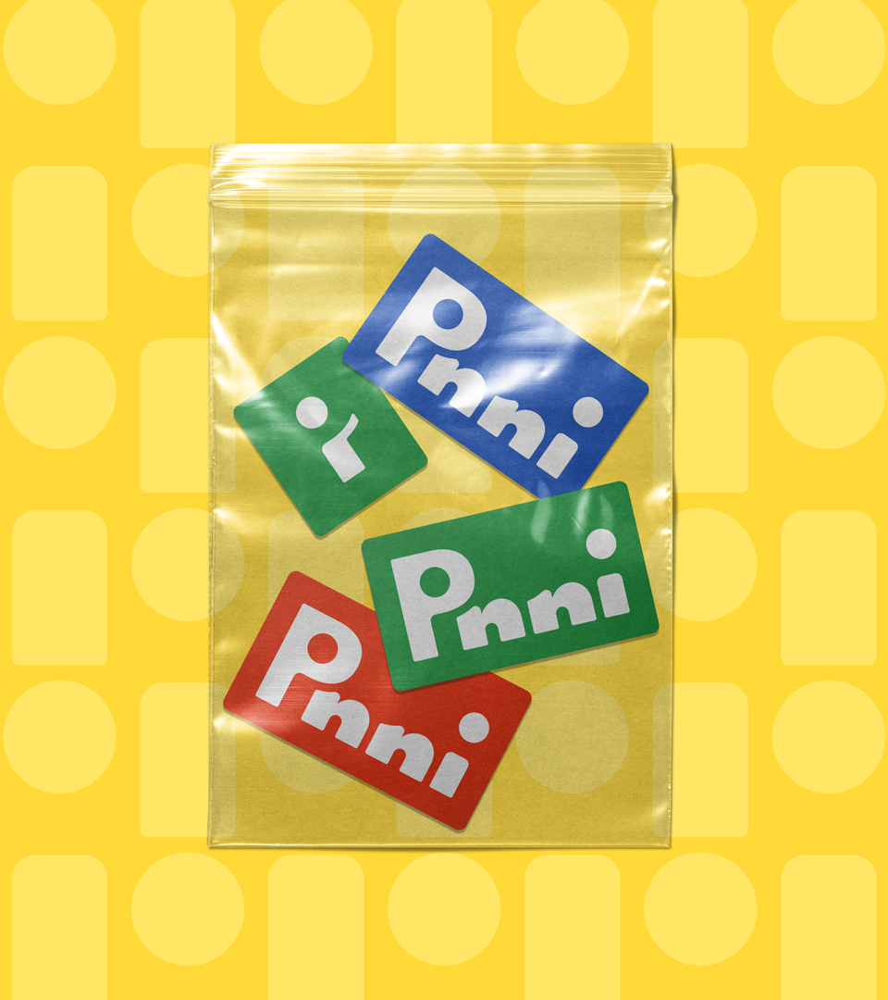
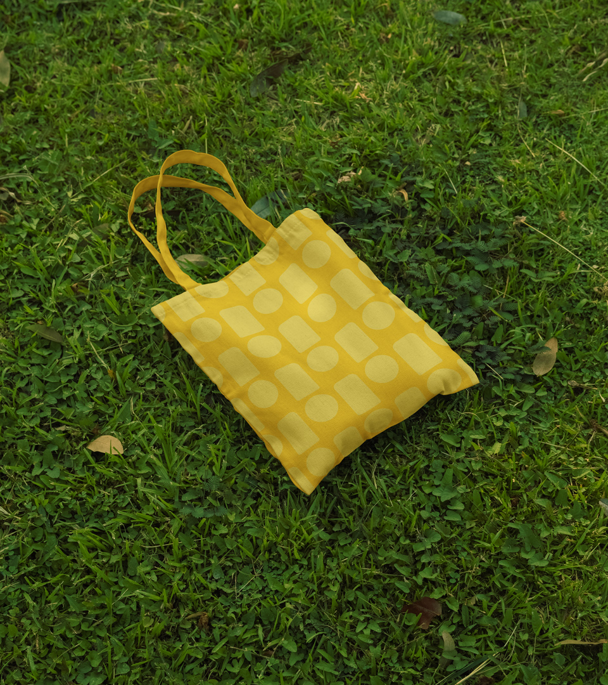

Pinni is an app that helps adults in North America find substitute players for their recreational sports teams. The goal of the brand is to help people overcome any hesitation they might have playing with strangers, and to help foster connections while having fun.

The mood board's colours, type, photography and graphics were chosen to emphasize connection, community and play. This reflects the nature of team sports, and serves to combat the struggles people face trying to find substitute players they trust if they can't find a friend or mutual to play.

The name "Pinni" originates from the word "pinny," another term for a training jersey/scrimmage vest in team sports. This word was chosen because wearing a pinny means to be a part of a team, and it ties in to the recreational level the audience plays in.



